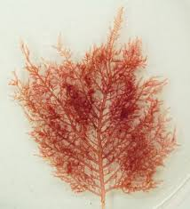

Wrangelia penicillata

Alga rodòfita de forma d'arbre que viu al sublitoral fins als 40m aquí al mar Mediterrani. Té diferents morfologies segons la fondària però aquesta en superfície pot fer fins als 10cm d'alçada.
Anar a l'inici